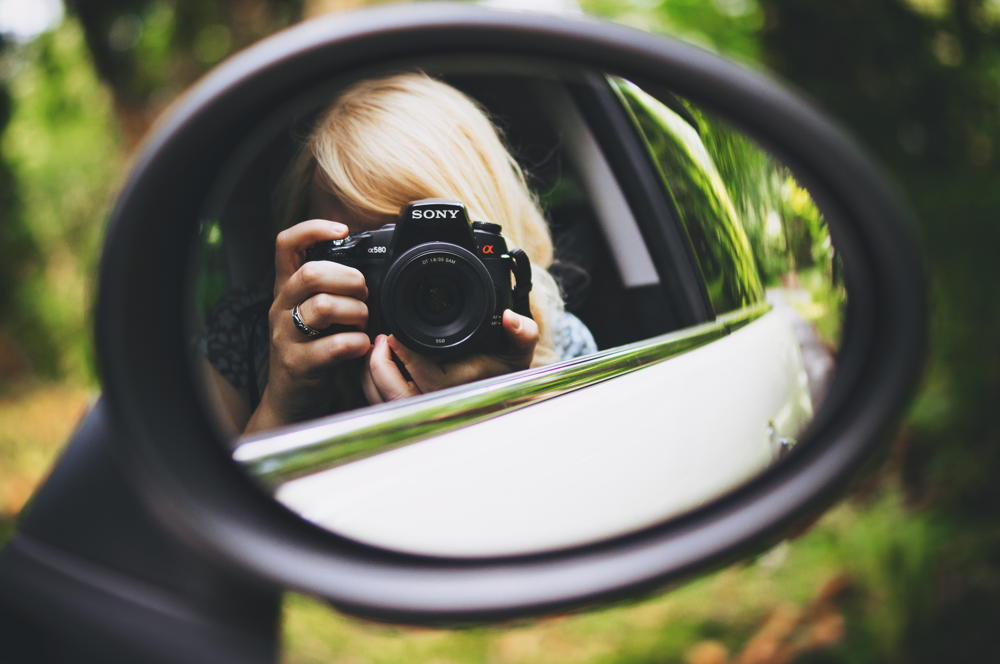

<div id="page-about">
<section class="container">
  <article class="content">
    <h1>I'm Melissa. <span>Nice to meet you.</span></h1>
    <p>I'm a Dutch/Northern Irish mongrel who tinkers with user experience and designs websites at <a href="http://eyekiller.com">Eyekiller</a>. You'll often find me <a href=" {{ site.twitter }}">tweeting</a> about design, dogs and Game of Thrones, or writing in my  <a href="{{ site.baseurl }}/journal/">journal</a>. </p>

    
    <p class="caption">Hey, that's me exploring The Giant's Causeway</p>

    <h2>I Design</h2>

    <p>After graduating from Ulster University in 2013 with first class honours in Interactive Multimedia Design, I embarked on a career of web design, joining the talented lads at <a href="http://rumblelabs.com">Rumble Labs</a> in Belfast. After almost two years with the Rumblers I ventured to a new design position with the great folks at <a href="http://eyekiller.com">Eyekiller</a> in Bangor.</p>

    <p>By day I design and develop sites and apps for the web and occasionally dabble in branding and print design. Notebooks seem to be the perfect gift for me as mine quickly fill up with ideas, users flows and sketches. </p>

    <p>You can learn more about my skills and experience by checking out my <a href="{{ site.linkedin }}">LinkedIn</a> profile, or catch up with my latest design work on <a href="http://dribbble.com/keizgoesboom">Dribbble</a>.</p>


    <h2>I Photograph</h2>
    <p>When I'm not behind a screen, you might just find me behind a lens. I'll often create <a href="https://melissakeizer.exposure.co/">photo stories</a> of my photography adventures. You can take a look at my photographs on my  <a href="{{ site.flickr }}">Flickr</a> or my <a href="{{ site.baseurl }}/photography/">portfolio</a>. I'll warn you though, it's mostly pictures of <a href="https://www.flickr.com/photos/tinyspark_boom/15616844147/">my dog.</a></p>

    <p>I'm available for freelance photography work, if you're interested in working with me <a href="mailto:{{ site.email }}">get in touch</a>. </p>

    
    <p class="caption">My 35mm prime lens is my favourite</p>


    <h2>And a Little More</h2>

    <p>You can often find me mingling with fellow designers and developers at local tech/design events in Belfast, including <a href="http://refreshbelfast.com/">Refresh</a>, <a href="http://belfastruby.com/">Belfast Ruby</a> and <a href="https://twitter.com/LadiesthatUXBFS">Ladies That UX.</a></p>

    <p>In my spare time I also enjoy obsessing over cute animals, lifting weights and reading articles on Medium and Quora.</p>

    <p>I also like meeting new people and receiving friendly emails, so don't be afraid to <a href="mailto:{{ site.email }}">say hello!</a></p>

  </article>

</section>
</div>

